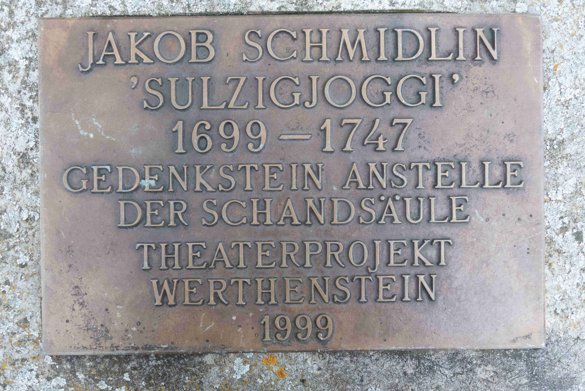

Der Ort – in der Nähe eines Klosters
Ganz in der Nähe von Werthenstein im Kanton Luzern liegt die Sulzig. Es ist ein unscheinbarer Ort mit wunderschönem, weitsichtigem Ausblick. Die Königin der Berge, die Rigi, ist von dort in Richtung Süd-Osten zu erblicken, gen Nord bei schönem, klarem Wetter die Vogesen und Richtung Westen die markante, kalkig zerfurchte Schrattenfluh. Zu Füssen des friedlichen Orts liegt unter anderem das Kloster Werthenstein. Nach der Reformation wurde das Marienheiligtum zu einem wichtigen, manche sagen sogar zum nach Einsiedeln zweitgrössten Marienwallfahrtsort der heutigen Deutschschweiz. Dass das Kloster an der Kantons- und Konfessionsgrenze gelegen war, zeigt sich an der Tatsache, dass ein vom reformatorischen Ikonoklasmus aus dem Bernischen Fribach gerettetes Marienbildnis dort verehrt wurde. Der Ort mit seiner Heilquelle wurde von der Luzerner Obrigkeit gefördert.
Detailansicht Kloster Werthenstein – unweit der Sulzig und ein zentraler Ort für Jakob Schmidlin. (Bild: Noemi Neuhold)
Im konfessionellen Zeitalter wurde Sozialkontrolle grossgeschrieben. Religion und Kultur mutierten dabei gerne und schnell einmal zu einer Funktion des Staates. Die oligarchische Obrigkeit bediente sich des religiösen Moral- und Kultursystems, um die Untertanen zu braven, formbaren und gefügigen Zeitgenossen zu machen. An der Idee, dass Einheit nur über einheitliche Religionsbekenntnisse zu erreichen wären, wurde lang, im Sinne der Staatsräson, festgehalten. Das musste auch Jakob Schmidlin (gest. 1747) erfahren, der 1699 geboren später ein Anwesen auf der Sulzig erwarb. Einerseits betrieb er eine kleine Landwirtschaft, die aber seine Familie sichtlich nicht zu ernähren vermochte. Für den Klosterwirt in Werthenstein diente er als Küfer und Weintransporteur. So war er in seiner Zeit mobil, sah etwas von der Welt und lernte dabei andere Konfessionen kennen und schätzen. In Basel, im Bernbiet, im Elsass oder aber auch in Schaffhausen knüpfte er Kontakte. Nicht das machte ihn aber zu einem «Problemfall» in seiner Luzernischen Heimat, sondern seine vermeintlich «pietistischen» Anschauungen, die in Hauskirchen Konkretion und Ausdruck erfuhren.
Blick von der Sulzig in Richtung Osten – die sanfte Hügellandschaft und die «Weitsicht». (Bild: Noemi Neuhold)
Das Delikt – der vermeintliche «Ketzer»
Am Martinstag des Jahres 1746 wurde das Fass der Toleranz zum Überlaufen gebracht. Jakob Schmidlin wurde auf der Sulzig verhaftet, weil ihn der Ortspfarrer dort mit Freunden bei einem pietistischen Konventikel antraf. Es war Schmidlins letzter Tag in Freiheit. Private religiöse Versammlungen dieser Art, ausserhalb des Gotteshauses, wurden als destabilisierend und subversiv erachtet – der katholische Kirchgang bildete die erwünschte und vorgesehene Norm jener Zeit, zusammen mit der Christenlehre. Schmidlin war jedoch kein Einzelgänger. Menschen allen Alters, vor allem aber auch Männer, strebten nach einer persönlichen und gemeinschaftlichen Vertiefung ihrer christlichen Glaubenspraxis: Bibellektüre, erbauliche Treffen mit Gesang waren dabei wichtige Elemente – man traf sich in den eigenen vier Wänden. Der lokale Klerus sah sich dadurch delegitimiert, teilweise sogar bedroht. Teile der Luzerner Obrigkeit forderten so im Spätherbst 1746 ein hartes Durchgreifen, nicht zuletzt, weil ja Schmidlin schon 1739 zur Rede gestellt und arrestiert wurde. So galt er nun als hartnäckig, als rückfällig, quasi als unbelehrbarer Wiederholungstäter.
Erschwerend kam hinzu, dass auf der Sulzig in Luzern verbotene Bücher entdeckt wurden, darunter ein Katechismus, bei dem Einband und Inhalt nicht übereinstimmten. Die Denunziation, also die Anzeige, erfolgte aus dem Inneren der «Bewegung», welche in Jakob Schmidlin und somit auf der Sulzig sein Zentrum hatte. Der «Anzeiger», ein Wundarzt, lieferte Dutzende Namen an die Luzerner Obrigkeit, zu welchen dann auch Jakob Schmidlin in Verhören und unter Folter befragt wurde. Eine Art Flächenbrand wurde befürchtet. Etwas paranoid sah man eine teuflische Verschwörung am Werke, jedenfalls jedoch eine für Luzern gefährliche Seuche, die, wenn die Ansteckungsrate nicht minimiert würde, immer weitere Kreise zöge. Weil die Entlebucher in Luzern dazu en globo als unzuverlässig galten (Bauernkrieg 1653) und der Landstrich empfänglich für Bernische Infiltration angesehen wurde, musste rasch agiert werden.
Nach wochenlangem peniblem Verhör im katholischen Vorort Luzern, nach Folter unter Aufziehen mit am Rücken gebundenen Armen am Seil, nach strenger geistlicher «Betreuung» wurde im Mai 1747 der völlig zermürbte und total entkräftete Delinquent dem Scheiterhaufen übergeben, nachdem er davor – horribile dictu – «gnädigerweise» erwürgt wurde. Wir sprechen heute wohl zurecht und nach unseren Massstäben von einem Justizmord. Mehrmals hatte der Sulzigjoggi angegeben, dass er in die katholische Kirche hineingeboren worden sei und in ihr verbleiben wolle. Das half ihm nichts. Dem «Ketzer» wurde zum Verhängnis, dass ihm Kritik an spezifischen Formen der katholischen Frömmigkeit wie dem Fegefeuer, den Fundamenten des Messopfers, dem Skapulier oder der Heiligenverehrung zugeschrieben wurde.
Die Erinnerung – eine schwierige und komplexe…
Nicht nur bei Schmidlin kam das Naturelement des Feuers zum Einsatz, sondern auch sein Heim auf der Sulzig wurde eingeäschert. Es wurde dem Boden gleichgemacht, ja ausgelöscht. Die Quellen sprechen von einem Schandfasnachtsfeuer, das wohl weitum zu sehen war und als Mahnung diente. Ebensolches gilt für die Schandsäule, die danach vor Ort aufgerichtet wurde und in monumentalen Dimensionen weit herum sichtbar war sowie später zweckmässig zum Landvermessungspunkt avancierte. Schmidlins Familie wurde mit mehr als 60 weiteren Personen des Landes verwiesen, zwei «Häretiker» traf die Galeerenstrafe. Hier wurden deutlich Grenzen markiert und inmitten der eigentlich voranschreitenden Aufklärung Stärke demonstriert. Mit der Säule wurde eine «negative» Erinnerung in die Landschaft eingeschrieben, die dann 50 Jahre später, in der Zeit der Helvetik, zu Fall gebracht wurde. Die Schandsäule wurde zum Stein des Anstosses, wie ein halbes Jahrhundert früher Schmidlin selbst.
Warum aber würden wir diesen interessanten Ort der Zentralschweiz als theologisch bedeutsamen Ort der Schweiz bezeichnen? Die Erinnerung an das komplexe und tragische Schicksal des Jakob Schmidlin ist eine bleibende Mahnung im Heute. Intoleranz hat viele Facetten, sie ist schillernd. Der Name Gottes wurde dabei wohl oftmals missbraucht. Aber die Historiografie ist kein Gerichtshof. Wir sehen dabei zu, dass das Leben und Leiden dieses «einfachen», eigentlich irenischen, aber doch konsequenten «Gottsuchers» im Laufe der Zeit unterschiedlich rezipiert wurde. Insbesondere sah man ihn als Opfer klerikaler Macht und kirchlicher Intransigenz und Unmenschlichkeit. Mehrere Male wurde Jakob Schmidlin für bestimmte Absichten verzweckt, ja missbraucht. Differenzierung und Unterscheidung der Geister in diesem letzten Ketzerprozess der Schweiz sind nötig. Die Sulzig als Ort des Weitblicks aber ist auf jeden Fall einen Besuch wert. 1999 wurde eine kleine Gedenktafel ebendort errichtet – Anlass war eine Theateraufführung zum 300. Geburtstag Schmidlins.
Gedenktafel auf der Sulzig, mit Anspielung auf die Schandsäule. (Bild: Noemi Neuhold)
Dr. Gregor Emmenegger ist Professor für Patristik und Geschichte der alten Kirche an der Theologischen Fakultät der Universität Fribourg, Dr. David Neuhold ist Privatdozent für Mittlere und Neuere Kirchengeschichte an der Theologischen Fakultät der Universität Fribourg sowie Projektmitarbeiter an der Professur für Spiritual Care an der Universität Zürich, Dr. Anton Schwingruber war 1995–2011 Regierungsrat des Kantons Luzern, er ist Jurist und Historiker.
Weitere Artikel von {{author.author}} finden Sie hier:
Zur Vertiefung:
- Alfred Steiger: Der letzte grosse Ketzerprozess in der Schweiz. Ein Kulturbild aus dem XVIII. Jahrhundert, Luzern 1889.
- Hans Wicki: «Letzter Ketzerprozess im kath. Vorort Luzern: das tragische Schicksal des Gottsuchers Jakob Schmidlin von der Sulzig ob Werthenstein», in: Heimatkunde Wiggertal 44 (1986) 177-226.
- Aram Mattioli: «Durch göttliche Güte erwürgt», in: Die Zeit, Nr. 16, 11.04.2001.